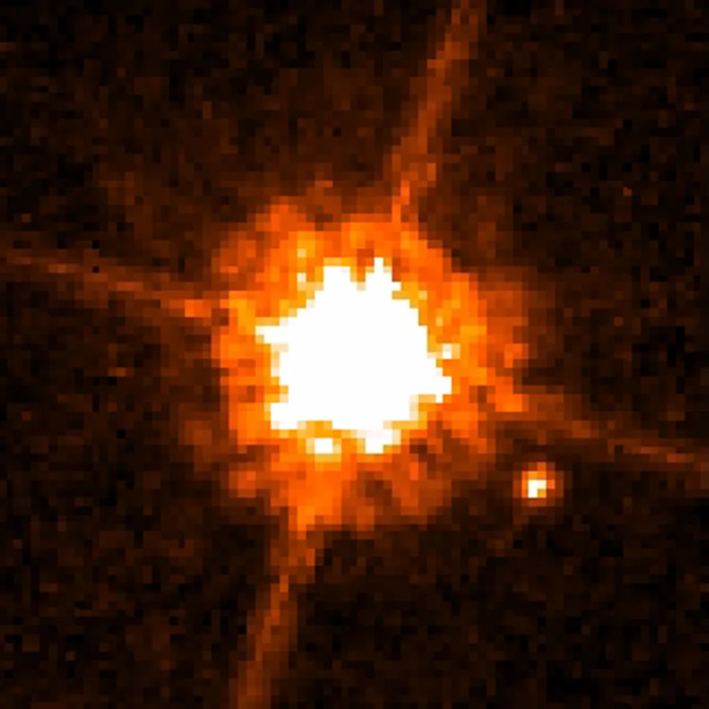

7. September 2006
Hubble fotografiert den Begleiter des Roten Zwergs CHXR 73
Die Advanced Camera for Surveys des Hubble-Weltraumteleskops hat im Februar 2005 einen Begleiter des jungen Roten Zwergs CHXR 73 aufgenommen. Im Nahinfrarotbild ist er der helle Punkt rechts unten neben dem überstrahlten Stern; er ist hundertmal lichtschwächer als dieser.
Mit zwölf Jupitermassen liegt das Objekt im Grenzbereich zwischen Planet und Braunem Zwerg; Entdecker Kevin Luhman stufte es als Braunen Zwerg ein. Es ist rund 200-mal so weit von seinem Stern entfernt wie die Erde von der Sonne. Der Stern ist etwa zwei Millionen Jahre alt und 500 Lichtjahre entfernt.
Quellen: ESA/Hubble: "Planet or failed star? Hubble photographs one of the smallest stellar companions ever seen" (heic0610)., 07.09.2006; ESA/Hubble: "Hubble spies possible brown dwarf around low-mass star" (image heic0610a)., 07.09.2006